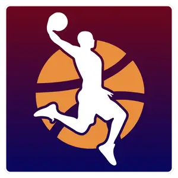
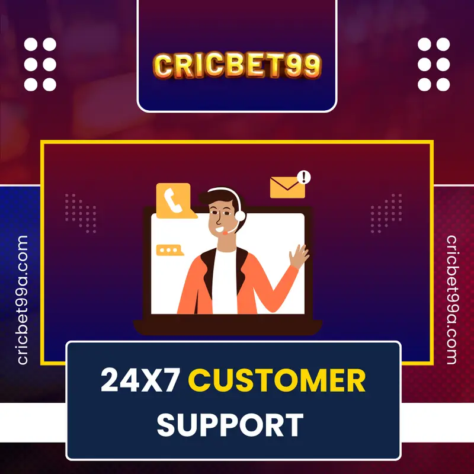
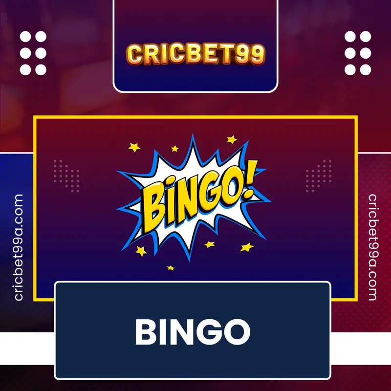
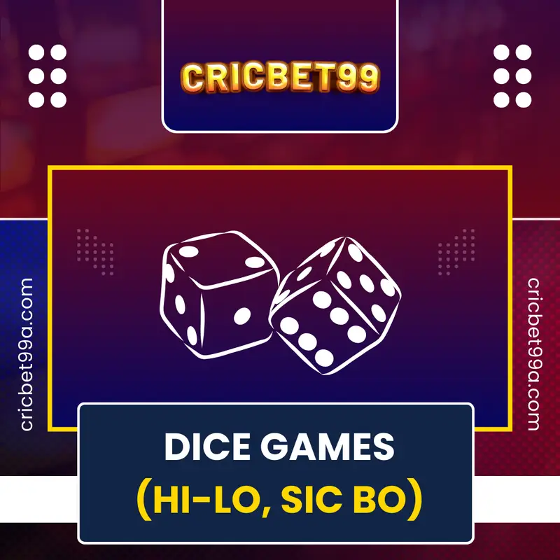

Cricbet99:
India's Trusted Cricket & Casino Betting Platform
Cricbet99 Online Betting ID is a dependable platform to get your
betting ID fast and securely. You can create your online cricket ID in just
seconds and begin playing immediately. Cricbet99 is considered one of India’s most trusted and
stable online cricket ID providers, permitting users to invest their cash
and abilities to earn big on cricket, soccer, tennis, IPL, T20, ODI and international tournaments.
Experience real win excitement with cricbet99—your one-stop destination for
secure, seamless online cricket betting and premium casino betting India. Cricketbet99, sometimes
referred to by most punters as Cricket bet99, has been the most reliable online
site among the sports lovers who not only love casino
gambling but also the most preferred sporting game in India, cricket.
What is Cricbet99?
Cricbet99 (also searched as Cricket bet99) is one of the most recognised online betting
websites in India, known for the large number of sports betting options to follow and very
exciting casino games. It highly believes in user experience, security, and transparency while
attracting both novice and expert bettors. The platform supports betting on cricket, football,
tennis, kabaddi, along with popular casino games like Teen Patti, Poker, Roulette, and Andar
Bahar-all available on mobile and desktops.
What actually sets Cricbet99 apart from all others is its user-friendly
interface,
which allows easy navigation and seamless gameplay on all devices. The site boasts quick
registration, quick withdrawal, and 24/7 customer support, making it convenient for bettors.
Good data encryption, safe payment gateways (UPI, cards, and wallets), and frequent offers will
guarantee security in your transactions. Live betting, real-time odds and multilingual support
(and Hindi is one of them) are also a plus.
Cricbet99 has the mission of ensuring that Indian customers can get a
convenient,
comfortable and enjoyable platform in which they can bet with due convenience besides
entertainment. Whether you are a sports fan or a casino enthusiast, Cricbet99 will have you
covered in easy, enjoyable and reliable online gaming and Cricbet99 has become the destination
where you can safely and enjoyably bet in India.
Why
Indian Bettors Choose
Cricbet99 for Safe & Secure Betting
Cricbet99 has become quite popular in the
first
place as it is the most preferred safe sports betting India experience for Indian punters due to
strong security, transparency, and the player-first approach. One thing that sets this platform
apart is its speed, responsibility, and localised service delivery from the crowd.
Licensed & Regulated for
Assurance:
Cricbet99 is regulated under the right Curacao gaming license, and on
behalf of
the terms and conditions of sports activities or online casino occasions, this licensing is
supposed to be monitored under international management. Please be conscious that the
legality of
online betting id in India varies by state.
Cricbet99
is certified in Curaçao; however, prison availability may additionally range through the use
of region. Our About Us page lays out our regulatory credentials—constructing the keep in
mind that is essential for long-term consumer pleasure.
Top-Level Security
Standards:
Each transaction and the private data of every user are protected
through industry-leading SSL encryption. From account management to the total gameplay, your
information is protected by strict firewalls and continuous security checks. As we highlight
in our Responsible Gaming section, player protection is at the core of everything we do.
Local Payments & Fast
Payouts:
Gone are the times of complicated
foreign payments—Cricbet99 win supports all
main Indian-friendly payment methods from UPI and NetBanking to almost all popular
e-wallets. Every bettor is embraced and can easily participate with the minimum specified
deposit of merely ₹100. Winnings get processed quickly: our payout systems are engineered
for same-day or next-day withdrawals, making sure you really savour that “cricbet99 win.”
Directions for step-by-step guidance can be found in our Payment Guide.
Exclusive Features:
Cricbet99 Club Membership in
this exclusive “cricbet99 club” will enjoy
personalised bonuses, tournaments exclusive to cricbet99, and VIP support. Whether you are a
newbie just getting started or a seasoned veteran, the Cricbet99 club offers you a discovery
of insights, special features, and value that enhances the gaming journey while putting top
safe sports betting India first.
With dedicated customer care 24×7 and a deep
commitment to fair play, Cricbet99
assures true trust and safe sports betting India. Today, join to get the winning edge!
Bet on IPL,
Cricket & Casino
with Best Odds at Cricbet99
Experience the online betting gesture at its thinnest with
Cricbet99, your
one-stop shop where a wide variety of cricbet99 game choices include IPL, cricket, and exciting
casino games. Cricbet99 win comes with the best odds against the rest, ensuring every single bet
placed gives you every chance of winning potential. Whether you’re a rookie betting for the first
time or a seasoned bettor, Cricbet99 is an environment as simple to use as it gets, with stakes
fresh in the flavour of fairness and reliability.
Diverse Betting
Markets & Exciting Games
IPL & Cricket Betting
You can enjoy the ultimate IPL
cricket id experience here, with
comprehensive betting options offered by the Cricbet99 game. From match-winner and player
stats to in-play live betting, where you join the action as it unfolds – maximise your
chances across every ball and every over. The site promises you the best odds to ensure that
you are getting the highest returns on your bets in the cricket game.
Casino Games of All Kinds
The gamut of classics, including Teen Patti,
Baccarat,
Roulette, Blackjack, and thrilling slot games, is all included in the offer. Also, all the
games are operated by an approved Random Number Generator (RNG), which is notorious for
being legally and digitally credible. Cricbet99 win makes every moment online an enchanted
one with its sharp graphics and smooth gameplay as you indulge in casino hopping right at
your fingertips.
Live Betting Live Action
The cricbet99 live facility follows the action and provides
real-time betting markets. Get low when shooting the biggest spot in a single swing at live
statistics, momentum changes, and changing odds. This will offer real-time interaction and
present interesting opportunities to make intelligent, timely bets.
Proven Fairness and
Transparency
The Cricbet99 values trust the most. The betting operations
are constructed on a platform of certified fairness, encrypted safety and licensing.
Transparency of the platform will allow you to bombard with full focus fully on your
strategy and gameplay without worry in regard to integrity.
Seamless User Experience
- User Interface: Canvases are easy to navigate the marketplace and
casino games because of a
user-friendly layout.
- Quick Deposit / Withdraw: Rapid transactions helps you to
perform financial transactions with
ease, and hence, focus on fun.
- Mobile-Friendly: Cricbet99 is mobile-friendly, and you can bet
at any time when you are on a
computer or on the mobile application.
A sprinkle of spice to your gambling life is a comprehensive offer of
the Cricbet99 game, amidst IPL action and the exciting casino tables. Live betting supplements the
host of other amusing games; there is never about wait for punishment. Surf through betting markets
and think about various game regulations that will help you know the opportunities you have more
effectively and maximise your chances of winning.
Cricbet99 Live involves keeping the heart of the game literally
in your hands as you get access to the latest statistics and competitive odds that take betting to a
new professional level. And whether you are the risk-averse or the one who goes broke, the site fits
your style, providing balance, fairness, and rewarding results.
Sports Betting
Available in
Cricbet99
Cricbet99 is very enrich in the betting types
as people with
different interests and personalities get the betting suitable to them. Mainstream or niche sports,
the platform has extensive coverage and competitive odds across many different types of bets.
Cricket-heavy
Cricbet99 is indeed the most hyped sports betting
website for
cricket. The platform includes international matches such as ICC World Cups or bilateral
series and all three formats (Test, ODI, and T20). Cricbet99 also goes with major leagues
like IPL (Indian Premier League), BBL (Big Bash League), and CPL (Caribbean Premier League).
The creation of single-play bets, match outcomes, player statistics, and much more becomes
highly engaging and worth placing bets with.
Football
For every soccer fanatic, Cricbet99 has the league’s best
top-tier leagues are high by: English Premier, La Liga, Serie A, and Bundesliga. In addition
to that, users might be more interested in international events. UEFA Champions League and
FIFA World Cup are on top of the foremost tournaments featured on the site itself. Different
bet types are available, including match winner, over/under goals, handicaps, and special
player bets.
Tennis
Cricbet99 gives live match coverage on key tennis
tournaments such as the Grand Slams, including Wimbledon, US Open, French Open, and
Australian Open, as well as ATP and WTA tours. It provides bettors with the opportunity to
bet on match outcomes, the number of sets, total games aggregate, as well as in-play live
betting markets.
Kabaddi
Booming with the game’s increasing audience in the country,
Cricbet99 also has bet markets for the Pro Kabaddi League and other leagues. Users could
choose results, player performances, and point totals, thus offering a wager view from a
little unconventional for this native sport.
Basketball
Competition betting, however, takes place both within the
local identified teams in the NBA and for events that are conducted by FIBA, such as the
Euroleague and other tournaments. It consists of markets like game results, point spreads,
totals, and player props, either pre-match or live.
Boxing
Boxing and MMA fight fans can wager on fight outcomes, as
well as the rounds and method of victory at Cricbet99. Thus, big events and local match-ups
are bet on with continuous updates in real time on their odds.
Volleyball
International volleyball events and club championships are
also captured in the line of betting. Bettors can have predictions on match winners,
winnings in points, and some even on the specific performance of particular players.
Others Sports
Apart from the names, there are still more of esports,
badminton, table tennis, and various racing events in Cricbet99. Thus, it is almost
guaranteed that every bettor finds something appealing to his tastes where he could wager on
most, if not all, types of sport.
Step-by-Step Guide to
Create Your Cricbet99 Betting ID
Cricbet99 ID creation is an open-and-shut affair that ensures
you are
quickly initiated into betting on one of India’s most reliable platforms. The betting scene
is
made easy for anyone, whether a rookie or a seasoned risk-taker. The Alps of Columbia,
courtesy
the signed journey with ease, security, and speed, and this step-by-step guide will take you
to
the final level of this intervention so that you can confidently finish with cricbet99 sign up
and get down to betting in an easy terms hassle-free way.
Step 1: Access the Official Cricbet99 Website
Now, start off by going to the official Cricbet99
Bet platform using any browse that you prefer. Ensure that you are on the
legitimate site by looking for secure HTTPS
protocols along with official branding. This would build up a sound foundation of security
for you before you move on to account creation or login.
Step 2: Start Registration
After reaching the homepage, locate and click on “Sign Up” or “Register,”
usually at the top
right. Once you click on it, you are redirected to the form. From there, you are redirected
to
an Cricbet99 create account.
Step 3: Provide Personal Information
To create your cricbet99 id, you must provide accurate
details comprising:
- Full names (as per your government ID)
- Working email address
- Your phone number (to receive verification codes and alerts)
- Date of birth(confirmation of legal age for betting)
This irrefutably ensures that your account holds regulatory standards and works towards its
own
security.
Step 4: Create Login Credentials
Create a strong password for your Crickbet id so that your account cannot be accessed by
unauthorised persons. A combination of letters, digits, and other symbols, a password must
remain strictly confidential and must not follow any simple pattern.
Step 5: Accept Terms and Conditions
Once logged in, the user can now play the great games available, including slots and
jackpots.
Checking the acceptance box affirms that you understood and agreed to play according to the
rules and guidelines set by Cricbet99.
Step 6: OTP Verification for Cricbet99 Sign Up
Using ostracism as one major initiative, Cricbet99 maintains its OTP verification during the
Cricbet99 sign up process to secure your account. Input the authentication OTP received from
either your registered number or email to substantiate your identity. This provides a layer
of
security against fraudulent registrations.
Step 7: KYC in Organised Customer
You are obliged to KYC depending on national regulations and the policies of the platform
before
withdrawal for the first time. This remains the winning practice to upload duly
identification
documents like your Aadhaar, PAN card, or passport for legal and safe transactions.
Step 8: Load Your Money
After registration and verification proceed, go ahead and make a deposit into your Cricbet99
wallet; the platform provides for several convenient and secure payment methods within the
region of India that include UPI, net banking, credit/debit cards, and E-wallets. Minimum
deposit limits would be set at affordable entry levels to lure new players.
Step 9: Start Betting
Now that your Cricbet99 id is up and running, head to the sports and casino betting
activities.
Live matches with the best odds can be placed with minimum navigation required for an easy
betting experience. Your profile dashboard helps you keep track of active bets and
transaction
history in an orderly fashion.
With these four simple steps behind you, you enter into the smooth and secure
way of
creating and accessing your Cricbet99 id, thus ushering in a vibrant and rewarding online
betting experience. You will never go wrong with a well-structured signup and login system
that
fosters maximum usability among even first-time users or gives the greatest protection and
comfort to the advanced.
About Cricbet99
| Company |
Cricbet99
|
| License |
Curacao
|
| Payment Methods |
Debit/Credit Card, UPI, e-Wallet, Net Banking
|
| Banking Services |
Available 24×7 |
| Sports & Casino Games |
Cricket,
Football, Tennis, Basketball, Esports,
Racing Games, Teen Patti, Blackjack, Roulette, Bingo, and more |
| Crash Games |
Aviator, Jetx, SpaceXY, CrashX, Multiplier Crash,
SkyCrash |
| Customer Support |
24×7
via WhatsApp Chat, Telegram, Email, and
Phone. We provide instant support. |
| Languages Supported |
English, Bengali, Hindi, Telugu, Marathi, and
many Indian languages |
| Currency |
Indian Rupees (INR) |
| Demo Account |
Available |
| Betting ID Charges |
Free
|
| Minimum Deposit |
₹100 |
| Minimum Withdrawal |
₹1000
|
| Max One-Time Depositl |
₹49,500
|
| Max One-Time Withdrawal |
₹49,500 |
| Bonuses & Offers |
400%
Welcome Bonus, 30% on Deposits, 35% Referral
Bonus |
Secure Cricbet99
Login &
Exclusive Club Member Access
The simplest and secure log out, the
primary
characteristic of Cricbet99 is that it possesses all the benefits. The cricbet99 login procedure is
quick, safe, and simple to follow. Your Cricbet99 login id and password permit you to access your
account from anywhere and at any time with certainty. Cricbet99 login id and password permit you two-way
access to exclusive betting markets, real-time updates, and custom offers.
Secure Login Features
-
State-of-the-Art Security Measures:
There are encrypted transfer of data, two-step
authentications, and other ways that ensure your cricbet99 login is not infiltrated by
unauthorised people.
-
Simple Access: All you need is to log in to your mobile
app or desktop with your
cricbet99 login id and password- also optimised to be fast and reliable.
-
Password Recovery Help: You have lost your password?
This is a special Login Help
feature that allows you to securely reset your credential to log into your account.
Cricbet99 Club Member
Access Benefits
-
Exclusive Promotions: The cricbet99 club login portal has
exclusive bonuses and offers
that can only be accessed by club members.
-
Priority Customer Support: Club members have access to
faster and more personalised
services when it comes to any issues related to accounts or betting.
-
Individualisation: The dashboard is enhanced with
features, betting recommendations are
made to the user, and early alerts are sent through the exclusive cricbet99 club log-in
section.
-
Loyalty rewards: Earn track points and redeem them into
unique prizes that provide you
with a good experience in betting.
How to Login Safely
- Go to the official Cricbet99 web page or open the mobile app.
- Enter cricbet99 login id and password.
- Complete any additional verification if prompted.
- For further assistance, refer to the Login Help page or get in touch with support.
Your security and seamless entry into the Cricbet99
ecosystem are our top priorities. Use your
cricbet99 login and take advantage of exclusive club access
today
to enjoy all the perks of being a member.
Your security and seamless entry into the Cricbet99
ecosystem are
our top priorities. Use your
cricbet99 login and take advantage of exclusive club access
today to enjoy all the perks of being a member.
Top Sports
Tournaments to Bet on at
Cricbet99
Cricbet99 has an exciting portfolio of athletic
events which makes it an ideal betting venue for Indians wishing to indulge in thrilling betting
opportunities. Here are some of the biggest sports events available for betting through Cricbet99’s
secure and easy-to-use platform.
ICC Cricket World Cup
The ICC Cricket World Cup is the biggest global
cricket tournament, bringing top international teams together on one stage. With an online cricket ID , you can place bets on match winners, top
batsmen, highest run scorers, and enjoy live in-play betting at Cricbet99, along with a wide
range of exciting betting markets.
Indian
Premier League
(IPL)
The IPL is viewed mainly for its fast-paced Twenty20
cricket.
Millions of viewers from all over the world tuned in. Cricbet99 allows online streaming and
various betting on IPL matches, from bets on player performance to match outcome betting.
Hence, excitement is unmatched for enthusiasts.
FIFA World Cup
This is the most famous competition in football worldwide,
attracting
millions of fans of the sport. Cricbet99 markets for goals, winners, and player statistics
have full coverage from group stages to the finals.
UEFA
Champions League
The best club competition in Europe always contains exciting
fixtures through every season. Cricbet99 provides such markets as match winner and handicap, and
under/over goals to bettors to capitalise on every thrilling moment.

NBA Playoffs
Fans of basketball can dive into the intense
atmosphere of the NBA Playoffs with Cricbet99. Bet on game results, player performance, point
spread, and others, all optimized for easy and real-time betting updates.
Wimbledon Championships
Perhaps there is no other tournament as classically
hailed as the Wimbledon event where players across the globe come to stake their claim in
tennis. Bet with Cricbet99 in-match outcomes, set scores, and even live match points on fast
odds with intuitive interfaces.
100% Trusted Platform
Safe, Secure & 100% India’s Most
Trusted
Cricket & Casino Platform
Fastest Withdrawal
Instant
withdrawal betting with Cricbet99 –
quick secure cashouts
3M+ Users
Experience safe betting
with Cricbet99 – trusted by
3M+ players
Best Platform
Trusted platform for
Cricbet99 ID. Licensed
and uses RNG (Random Number Generator) with Curacao
Download Latest
Cricbet99
App for Android & iOS Fast Access
If you are looking for the best way to play
your favourite sports anytime and anywhere with betting, then this Cricbet99 app is the answer. The
cricbet99 download apk latest version was structured with mobility in mind to give users fast,
seamless, and secure betting in India. You will now enjoy playing the game of cricket or football,
tennis or casinos in a matter of a few easy and hassle-free steps with the options that of cricbet99
download has enabled.
Easy Cricbet99 Download and
Installation
Cricbet99 download is a very easy-to-use and smooth mobile app for Android
and iOS:
- Cricbet99 Download apk latest Version: Android users may
download the latest APK file
via the cricbet99 download official app page. This way, you will always get the most
updated version of the app without having to download third-party stores.
- Go to the App Store: Cricbet99 app is found in the Apple App
Store to iPhone and iPad
users. There are no bad days when the iOS application performs poorly during easy
downloading and quick updating.
- Troubleshooting Guide: In case of any problem
when downloading cricbet99 app or
installing it, there are special troubleshooting instructions and customer support,
which are available to fix the problem and continue with betting without disruptions.
Features of the Cricbet99 App
- Mobile-First Design: The interface is made in such a way that
it is easy to use with a
touch interface and it loads quickly even on slow Internet connection.
- Safe Payments: The app is compatible with most Indian payment
options, including UPI,
Paytm, and net banking, and they have been secured with advanced encryption.
- Real-time Betting: It allows people to place bets on the
matches that are currently
going on with the current dynamic odds which will be updated automatically.
- Selection of Wide Games: With the application, you can bet on
popular casino games and
crash games in real time, compared to traditional sports betting.
Get Started Today
First, go to the official website where you can download Cricbet99
apk
latest version, and you will find all the instructions on the usage of the most recent version
of the Android APK file. For iOS users, the app can be downloaded from the App Store, which
easily gets regular updates and smooth installation procedures.
In case of any technical issues during installation or
logging in, one
can visit the troubleshooting section on the site and keep enjoying uninterrupted betting and
gaming experiences.
The Cricbet99 app is a mobile betting application that allows you
to use
the full range of betting capabilities safely and conveniently with just a few button presses.
Cricbet99 download today and bet on anything.
Get 400% Welcome
Bonuses, Cashback & VIP Club
Rewards at Cricbet99
Cricbet99 club and its brilliant bonus ideas will open the door
to the
world of rewarding opportunities and will propel your betting experience and winning potential
to the stratosphere. New users are met with a whopping 400% welcome bonus, giving significant
power to the initial sums of money you invest with them, so you can put them to use straight
away, boosting your entertainment and fun. The extra playing capital this bumper bonus can
provide you also allows you to explore other sports and casino markets more securely and
assuredly.
Key Highlights of Cricbet99 Bonuses and Rewards
- 400% Welcome Bonus: A nice sign up bonus that
multiplies your opening
deposit four times to allow you to bet more or to enjoy various games.
- Constant Cashback Promotions: Play with
confidence knowing you have a
cashback offer periodically to reimburse part of your losses and play longer.
- Cricbet99 Club Membership: Become an exclusive
Cricbet99 club member and
receive special deals, personalised bonuses and priority services specific to your
betting practices.
- Cricbet99 Win Program: Climb to Cricbet99 win club
status and enjoy more
rewarding benefits such as higher betting limits, faster withdrawals and invitations to
exclusive events.
- Referral Program: You will receive countless good
rewards whenever you
refer your friends using the Cricbet99 referral program.
- Consistency of promotions and events: You will be
overly entertained with
constant promotions such as festival offers, reload bonuses, and surprise gifts during
your betting time.
Claim
Cricbet99 Bonus
Cricbet99: Understanding Bonus Terms
Transparently
Cricbet99, in all respects, makes you
its priority. It has laid out clear and fair terms for all bonuses under the 400% welcome
bonus. The wagering requirements that are applied are competitive; hence, much ease is
available in reading and understanding how to avail of rewards without hidden catches.
Moreover, cashback and referral rewards are credited instantly, with clear terms easily
accessible through the Promotions page.
Our loyalty rewards program tied to
the Cricbet99 club will reward you with a little extra for your constant play and attendance
in the game. Moving up the ranks to your exclusive Cricbet99 win club platform will bring
you additional benefits like improved odds and even account managers to take care of your
betting experience at the VIP level.
Verified User Testimonials
Reflecting Real
Value
“I just joined Cricbet99, and I was shocked by
the
welcome bonus—my first deposit was instantly tripled! It’s the Cricbet99 club rewards that
keep me coming back. Withdrawals are smooth and hassle-free,” relates R.K. from Jaipur.
Meera D., Mumbai is another happy customer; she
says,
“The Cricbet99 referral program enabled me to earn some additional bonuses by just inviting
my friends. The cashback allowances also cushion the impact of losses that occur
occasionally, making the platform just and fun.
Elevate Your Betting with Cricbet99
These are not just good betting chances.
Instead, Cricbet99 is a full-fledged entertainment and profit-maximisation ecosystem that
comes with numerous bonuses, 100% transparent deposits with no hidden rules, enjoy cashback
with full balance access, and club memberships. To get an elite betting experience, become a
member of the Cricbet99 club and customise your benefits with the Cricbet99 win club platform.
You can miss nothing-visit the
whole offers we have to offer you in our Loyalty Program page and begin making your winning
bets on Cricbet99 today!
Fast, Trusted
Payment Options &
Withdrawals for Indian Players
Betting sites take much care in how deposits and
withdrawals
are processed before admitting any online betting sites or UPI betting sites, and Cricbet99 cash is
fast and perfect in developing fast, reliable financial transactions that suit Indian users. Be it
depositing funds into your account or cashing out your winnings, Cricbet99 offers excellent multiple
trusted methods designed for your convenience and safety.
Click here
for Instant Withdrawals
Popular Payment Options on Cricbet99
- UPI betting sites: Cricbet99 cash
is one of the best
compatible sites to use in UPI betting sites. Players may add deposit money anywhere
and any time through Google Pay, Phone Pe, Paytm and other popular UPI applications.
- Banking Methods: Net Banking, debit
and credit
cards, all offer smooth deposit and withdrawal options, so different methods can fit
everyone.
- E-wallets, Online Payment Systems:
Skrill, Neteller,
etc., are also safe to transfer money.
Withdrawal Process
Cricbet99 knows the importance of getting money fast. A
majority of the withdrawal requests are approved instantly after confirmation of the
request. You should not experience a cricbet99 cash payout delayed but to ensure that
this happens, ensure your account is fully verified.
Minimum Withdrawal & Deposit Limits
Cricbet99’s minimum deposit is set at ₹100, which makes
it easy for newcomers to get started. Similarly, the minimum withdrawal limit is ₹1000.
This promotes accessibility while ensuring efficient fund management at the same time.
Secure & Transparent Transactions
Every transaction on Cricbet99 is encrypted using
advanced SSL technology, giving your financial data protection from unauthorised access.
The platform also promises the transparency of their policies and instant customer
support as added trust boosts for every user.
For the detailed guidelines on deposits and withdrawals, visit our [Payment Guide] and practice safe
betting with tips from our [Responsible Gaming] section.
By prioritising fast, secure,
and flexible payment methods, Cricbet99
provides an unmatched betting experience where managing your Cricbet99 cash becomes very comfortable
and trustworthy, just as Indian players hope for it.

24x7 Customer
Support via WhatsApp, Telegram
& Reddy Anna Contact
At Cricbet99, we strive to
enhance your
betting experience with dedicated support verified for better convenience. Our helpline,
popularly referred to as Cricbet99 Reddy Anna contact, gives you timely help on all
queries/concerns so that your experience remains smooth and trustworthy. Whether it is
something related to deposits, withdrawals, account management or gameplay, our experts
would be present every step of the way to guide you.
Maintaining communication via
Cricbet99
WhatsApp number, we have 24X7 support staff available both on WhatsApp and Telegram. This
smooth communication stream offers you immediate answers to maximise the benefits of your
betting experience at Cricbet99.
Otherwise, the Contact Support and FAQ pages have additional information, and solutions to
the most frequent questions are presented to you on these pages.
One of the key support features:
- Verified Cricbet99 WhatsApp number and helpline for
instant messaging and
real-time assistance.
- Cricbet99 Reddy Anna contact provides authenticated
and trusted
communication.
- Expert support available 24×7 to help with technical
issues, betting
guidelines, and payment processes.
- Team members were trained with the sole and specific
purpose of protecting
your data privacy and betting security.
- Most of their support is provided in English, but
support is also provided
in various Indian languages.
- Formal follow-up to effectively address complex
issues.
- The smooth conduction of the support services with
the help of Cricbet99 WhatsApp number
and Reddy Anna contact proves that Cricbet99 means a lot to customer satisfaction and
responsible gambling. Whenever you want to get in touch with us, you can depend upon our
checked customer care number, which will be available to serve you properly, reliably
and professionally day or night.
Connect every time to ask questions on
the official Cricbet99 WhatsApp number or Cricbet99
Reddy Anna Contact to ensure your account and money are safe.
Enhance your Cricbet99
experience by calling the dedicated helpline so that you have a fully
professional and flawless betting experience throughout.
Play Responsibly with
Cricbet99: Player
Safety & Support Programs
Cricbet99 is committed to
responsible gambling
to ensure that all users have a fun, fair and secure betting experience. A licensed betting
India platform, Cricbet99 complies strictly with all the rules and ensures equity and
transparency in all its games. The very foundation of our services rests on an extensive,
secure betting infrastructure, well shielded from any encroachments on personal data and
financial transactions through the use of advanced encryption.
Cricbet99 also provides a
couple of extra
resources related to the welfare of players:
- Self-Exclusion: Voluntarily, players may restrict access to
their accounts (temporarily
or permanently) so that they can take a break when necessary.
- Deposit and Time Limits: Cricbet99 offers clients the
ability to establish user-friendly
deposit and time limits, which promotes moderate betting behaviour.
- Access to Resources of Support: Information and connections
to support counselling
organisations are readily available to individuals requiring support.
Cricbet99 practices responsible gaming that goes beyond the license
requirement and includes educating its users and avoiding gaming-related issues. They
monitor their users to identify early signs of problem gambling and encourage users to
only gamble what they can afford to lose.
This is why users are advised to learn more about how such initiatives can
offer protection to them by accessing the Responsible Gambling and Support sections of
the Cricbet99 site.
On this page, users will find elaborate guidance helping them in effectively
controlling themselves and making informed betting decisions.
By making the decision to go with Cricbet99, one is placing their faith in
a licensed betting India, which values their safety and well-being and offers you a
secure betting experience, enforced with professional assistance and creative devices to
ensure responsible gambling.
Play Exciting Indian &
Classic Casino Card
Games on Cricbet99
Teen Patti (3 Patti)
True to its name, Teen Patti is a dream come true for every card player in India. Use wisdom on
your three cards, bet right, and enhance your chances of victory with a timely bluff or two.
Several tables run on Cricbet99 for Teen Patti, each with its unique betting limits, styles of
play, and real-time action that ensure never a dull moment.
Andar Bahar
Addictive, to say the least, Andar Bahar is simply about predicting whether the chosen card
will appear on
the Andar side or the Bahar. Given fast rounds and no-frills game rules, Andar Bahar is for
beginners as much as
it is for the hardcore casino players.
Rummy
Rummy requires skill, concentration, and strategy to win. Organise your cards into valid
sets and
sequences to win the game. Have fun with popular variants of Points and Pool Rummy on
Cricbet99,
designed with smooth gameplay, fair competition, and entertainment features.
Muflis Teen Patti
Muflis gives a new twist to the classic Teen Patti. The highest hand does not win; here, the
lowest hand emerges victorious. It becomes
a refreshing and strategic alternative where players need to think and act differently, thus
adding the factor of excitement.
Satte Pe Satta
A traditional Indian favourite, Satte Pe Satta, involves arranging cards in sequence and
making smart and speedy decisions. Cricbet99 is bringing this group-style game online for
you to reminisce about and enjoy this classic with other players, wherever you are.
Poker
This is the ultimate find-your-skills-and-discover-your-wit robot poker game. You can play
cash or tour
nament style here with Texas Hold’em or Omaha Poker across the worl
d. Call bluffs, place your bets, and strategise your next big win with Cricbet99, be it a
skill you cherish or learn.
Exciting Casino Games
Awaits You on Cricbet99: Aviator, Crash,Bingo, and More.
LATEST CRASH GAME PLAY
Aviator
Aviator is known to be one of the most exciting crash games available: it forces players
to decide when exactly it is perfect to cash out before the plane flies away. The multiplier
keeps going up
as long as the plane is in the air, but wait too long, and it is gone. A real test of
snap decision-making and ref
lexes, Aviator would be the choice for those who want such high-speed thrills.
Crash
The tension builds in much the same way as for Aviator as the multiplier rises ever
higher. The
question is when to cash out to secure your winnings. The highest reward for those who
would like their heart racing
from the thrill of high betting and big rewards.

Bingo
Mark the numbers on your card and shout "Bingo" first! This game pours life into
Cricbet99 with its modern twists featuring themed bingo rooms, ever-reliable number
calls, multiple card options, and scintillating bonus rounds tailored toward maximising
your winning chances.

Plinko
Let the ball drop and bounce around a maze of pegs before landing in a jewel slot. With
its arcade-style charm and uncontaminated fun with pure luck, Plinko thrives in
entertaining. Every drop allows you to scale the risk and reward, yielding an entirely
new adventure in every single round.

Dice Games (Hi-Lo, Sic Bo)
Place your bets and shoot for the win by predicting the outcome of the dice! The online
versions of Hi-Lo and Sic Bo offer simple yet exciting gameplay with different betting
options and odds to keep things interesting and rewarding.,
Lucky Wheel
Spin the colourful wheel and try to land on the winning segment. Dazzling visuals meet
high multipliers in Lucky Wheel, where the simplicity and high-octane excitement enhance
nonstop fun and immediate big-win opportunities.
POPULAR SPORTS GAME
Cricbet99
Live Casino Games
Welcome to the colourful world Cricbet99 Live Casino, where thrills fly direct from the screen with
every spin, deal, or draw. The option provides the perfect blend of standard casino fun and modern
days for all kinds of players from the social gambler to the experienced player. From enthralling
table play to interactive dealer sessions, entertainment is always at its peak.
Live Roulette
Cricket Channel 99 gives you the thrill of seeing the wheel being spun in-person. You can
live-bet on any of these: European, American, or Lightning Roulette. You can place your bets on
numbers, colours, or combinations, while you can feel that adrenaline rush when they drop. Live
roulette will keep you entertained the whole way through, with fair odds, good gameplay, and a
realistic feel.
Live Blackjack
Join live tables to flaunt your skills in the classic game of 21. Classic Blackjack and Infinite
Black both have their share of fast-paced action, which is why Cricbet99’s offering of seamless
rounds is just what you love. They are even more dynamic and lifelike as you get to chat with
the dealers in real-time.
Live Baccarat
Currently, the more extravagant and easy-to-play casino game, Live baccara, is certainly among
Cricbet99’s first
choices. Live streaming entails wagering on banker, player, or tie, while cards are dealt in
front of you with growing HD quality. Choose between standard play and troll speed for the
greatest
kicks! Real-time dealing and simple betting make this game a favourite among many casino lovers.
Casino Game Shows Live
Looking for something nice and entertaining? Go for Cricbet99’s Live Casino Game Shows,
including Dream Catcher, Crazy Time, and Monopoly Live. This special featured casino mixes the
thrill of casino play with TV-show-like fun. With multipliers, bonus rounds, and interactive
features, they give players a unique opportunity to win big in a completely new gaming
experience.
Our Latest Blogs

IPL 2026 Betting Terms Explained: Cricbet99 Moneyline, Over/Under, Props
January 21, 2026
How to Get a Free Betting ID in India: Complete Guide with Cricbet99
January 20, 2026
Lay Betting Explained: The Ultimate Guide to Betting Like a Bookmaker
January 13, 2026
Best Cricket Betting Strategies That Work on Cricbet99 – Win Smarter
January 10, 2026

Cricbet99 Betting Rules – New Users Must Read
January 9, 2026
Top Strategies to Make Money in IPL Betting Safely and Smartly
January 8, 2026
Frequently Asked Questions (FAQs) about Cricbet99
A: Either way, when you forget your cricbet99 login ID and password, simply visit the login page and select the link that says forget password. To be on the safe side, use your registered email or phone number to use the step-by-step instructions to reset your password.
A: Cricbet99 hack tools have been rumoured for a long time, but no legit tool exists that can assure you any wins or bypass the security of the site. Hackings can lead to your account suspension and a compromise of personal data security. Always stay away from anything illegal!
A: By registering on the official site or through any reliable agents, you can obtain a cricbet99 new ID. The registration process is simple and fast, with some basic personal information and ID verification for account safety.
A: To be eligible to become a member of the Cricbet99 club, a person will most likely have to be an active visitor of the site. Members are provided with club bonuses and special privileges. You can visit the site or the club registration page and apply or enquire about the eligibility.
No, hacks are not legitimate. Always use the official platform for a safe experience.
A: Cricbet99 withdrawals normally occur instantly after approval. However, it is best to avoid delays by fully verifying your KYC so that your payout experience is quick.
A: Yes, Cricbet99 supports mobile betting with their app and mobile site, which is optimised to provide easy betting, live odds, and account management at any time and location.
A: Cricbet99 uses certified technology known as RNG (Random Number Generator) to ensure fairness and accountability in terms of every activity in its casino games and betting outcomes.
A: In case of any problems logging in with your cricbet99 ID and password, please verify the appropriate credentials and Internet connectivity. You can call customer support or use the password recovery system.
NA: Yes, Cricbet99 requires KYC verification according to regulatory provisions to safeguard the user accounts and to offer a safe betting platform. The KYC procedure normally involves ID document and address validation.
A: Cricbet99 login ID and password or registration help can be requested with the official Help Centre or any other support channels that are available and listed on the platform. The self-service solutions are enabled by some detailed guides and FAQs.
Disclaimer
This platform is intended only for adults. Users must be 18 years
of age or older. The information provided about Cricbet99 is intended
solely for educational and informational purposes. Online gaming and
betting involve financial risk, and participants are strongly advised
to play responsibly. We make no guarantees regarding outcomes,
winnings, or any specific results. Before engaging in any betting
activity, users should ensure compliance with their local laws and
regulations. Participation is entirely at your own discretion and
responsibility.
Copyright
All content on this website, including but not limited to text,
graphics, images, logos, trademarks, and design elements, is the
intellectual property of the website operators and/or their
licensors. Any reproduction, distribution, modification, or
unauthorized use of this material, in whole or in part, is strictly
prohibited without prior written consent.
© 2025 Cricbet99a and its affiliates. All rights reserved.